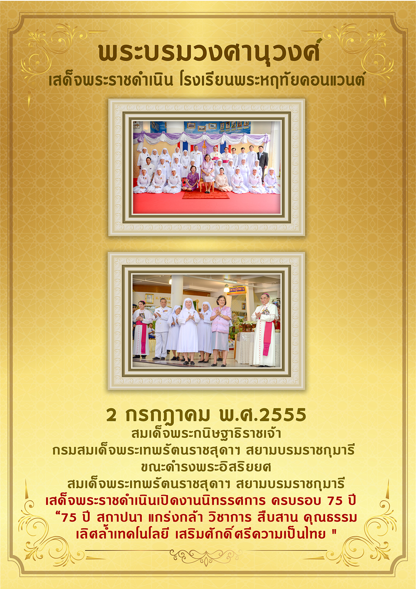

The Visite of The Royal Family
Wednesday 2012
2005
1997
1988
1987
Her Royal Highness Princess Maha Chakri Sirindhorn

2 July 2012
Her Royal Highness Princess Maha Chakri Sirindhorn presided over the 75th anniversary of the exhibition.